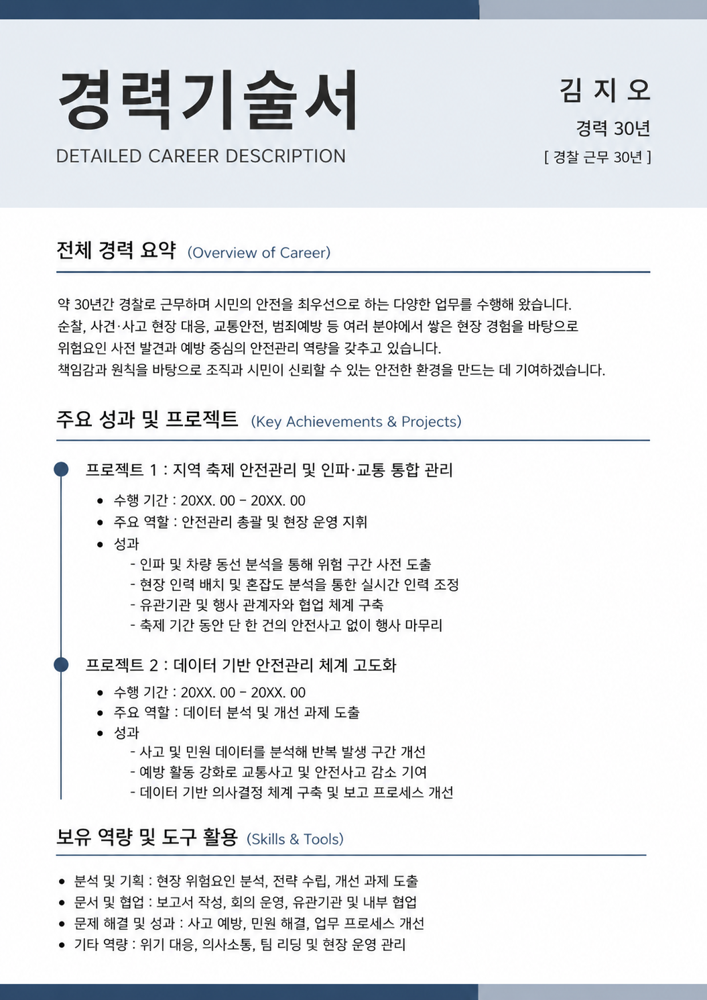
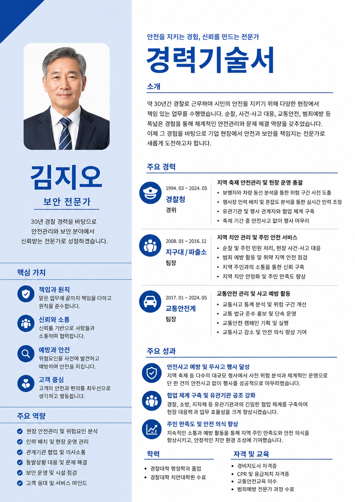

SELF
14:15~14:30
경력보다 나를 먼저 이해합니다
무엇을 잘했는지만 찾기 전에, 내가 중요하게 생각하는 가치와 앞으로 원하는 일을 AI 질문으로 천천히 살펴봅니다.
14:15~14:30 · 자기 이해
나를 알아보는 인터뷰 프롬프트
당신은 친절한 진로 코치입니다. 다음 주제를 한 번에 하나씩 질문해주세요. 1. 보람을 느꼈던 일 2. 자연스럽게 잘하는 일 3. 중요하게 생각하는 가치 4. 원하는 업무 환경 5. 새롭게 도전하고 싶은 분야 사용자는 완전한 문장 대신 단어 또는 짧은 표현으로 답할 수 있습니다. 답변이 짧더라도 내용을 추측해 만들지 말고, 필요한 내용을 한 번에 하나씩 추가로 질문해주세요. 질문이 끝나면 나의 가치·강점·관심 분야를 표로 정리해주세요.
인터뷰 입력 예시
짧은 단어나 표현으로 답해도 됩니다
완전한 문장을 만들려고 고민하지 말고, 기억나는 핵심만 입력합니다.
가장 기억에 남는 근무 경험은 무엇인가요?
나지역 축제 안전관리
당시 어려웠던 점은 무엇인가요?
나인파 집중, 차량 혼잡, 보행 동선 겹침
직접 어떤 행동을 했나요?
나위험 구간 확인 / 인력 재배치 / 관계기관 연락
결과는 어땠나요?
나큰 사고 없이 종료
이 경험에서 드러난 강점은 무엇일까요?
나관찰력, 신속한 판단, 협업, 책임감
01 · 단계별 실습
경찰 경력 분석 프롬프트
[보안직] 지원에 활용할 내 경찰 경력을 정리하고 싶습니다. 근무 기관·기간, 부서·직급, 주요 업무를 한 번에 하나씩 질문해주세요. 내가 답하면 다음 질문을 해주세요. 질문이 끝나면 경력과 강점을 표로 설명해주세요. 이력서에 사용할 최종 경력 요약 문장만 코드 블록 안에 작성하고, 설명·제목·주의사항은 코드 블록에 넣지 마세요.
경찰 경력 분석 입력 예시
경력은 짧은 단어로 답해도 됩니다
AI의 질문에 기억나는 사실만 짧게 답합니다.
근무 기관과 기간을 알려주세요.
나경찰서·지구대·파출소 / 약 30년
퇴직 당시 계급은 무엇인가요?
나경감
주요 업무는 무엇이었나요?
나순찰, 민원 상담, 현장 대응, 교통안전
가장 기억에 남는 역할은 무엇인가요?
나지역 축제 안전관리, 유관기관 협업
이 경력을 어떤 직무에 활용하고 싶나요?
나보안직
03 · 단계별 실습
직무 매칭 프롬프트
앞에서 정리한 경력과 성과를 [보안직] 업무와 연결해주세요. 어울리는 경험 3개와 연결 이유를 설명하고, 자기소개서에 가장 적합한 경험 1개를 추천해주세요. 설명은 코드 블록 밖에 작성하고, 자기소개서에서 강조할 최종 역량 문장만 코드 블록 안에 작성해주세요.
04 · 단계별 실습
이력서 작성 프롬프트
앞에서 정리한 내 경력과 성과로 [보안직] 이력서용 경력 요약을 작성해주세요. 경찰 용어는 기업이 이해하기 쉽게 바꾸고, [보안직]과 관련된 경력과 확인된 성과를 먼저 보여주세요. 이력서에 바로 붙여 넣을 최종 문장만 코드 블록 안에 작성하고, 작성 이유와 설명은 코드 블록에 넣지 마세요.
05 · 단계별 실습
자기소개서 작성 프롬프트
앞 대화에서 찾은 경력과 성과로 자기소개서를 작성하고 싶습니다. 지원 기관: [ ] 지원 직무: [ ] 자기소개서 문항: [자유양식] 활용 경험: [앞에서 정리한 이력 중 지원 직무에 가장 적합한 경험 1개] 입사 후 포부(선택): [ ] 글자 수: [1500자 이내] 앞에서 정리한 경력·강점·성과를 바탕으로 지원 직무에 가장 적합한 경험 1개를 선택하여 자기소개서를 작성해주세요. 입사 후 포부가 비어 있으면 앞에서 정리한 내용과 지원 직무를 바탕으로 현실적이고 구체적인 포부를 작성해주세요. [작성 구조] 1문단: 전체 경력 요약과 지원 직무에 연결되는 핵심역량 2문단: 대표 경험의 상황·과제·행동·결과를 담은 STAR 사례 3문단: 경험을 통해 배운 점과 지원 직무에서의 기여·포부 세 문단의 내용이 반복되지 않도록 자연스럽게 연결해주세요. 내가 말하지 않은 경력·경험·성과는 새로 만들지 마세요. 확인되지 않은 기업의 사업·정책·수치도 만들지 마세요. 코드 블록 안에서는 문장마다 줄을 바꾸고, 문단 사이에는 빈 줄을 넣어주세요. 최종 자기소개서 본문만 코드 블록 안에 작성하고, 문단 제목·작성 과정·설명·주의사항은 코드 블록에 넣지 마세요.
07 · 단계별 실습
자기소개서 최종 첨삭 프롬프트
앞에서 완성한 자기소개서를 채용담당자 입장에서 검토해주세요. 1. 좋은 점 2. 부족한 점 3. 더 좋은 표현 평가와 수정 이유는 코드 블록 밖에 작성해주세요. 확인되지 않은 경력이나 성과는 새로 만들지 마세요. 코드 블록 안에서는 문장마다 줄을 바꾸고, 문단 사이에는 빈 줄을 넣어주세요. 수정된 최종 자기소개서 본문만 코드 블록 안에 작성하고, 제목·평가·설명은 코드 블록에 넣지 마세요.
06 · 단계별 실습
기업 맞춤 수정 프롬프트
앞에서 작성한 자기소개서를 아래 기업에 맞게 수정해주세요. [입력 정보] 기업명: 한빛유통 지원 직무: [보안직] 기업 인재상: - 맡은 업무에 책임을 다하는 사람 - 원칙과 신뢰를 중요하게 생각하는 사람 - 동료와 적극적으로 협업하는 사람 - 고객의 안전과 편의를 우선하는 사람 기업의 인재상과 직무에 맞게 표현을 바꾸고, 관련 경험이 잘 드러나도록 다듬어주세요. 수정 이유는 코드 블록 밖에 간단히 설명해주세요. 코드 블록 안에서는 문장마다 줄을 바꾸고, 문단 사이에는 빈 줄을 넣어주세요. 최종 자기소개서 본문만 코드 블록 안에 작성하고, 제목·설명·평가 문장은 코드 블록에 넣지 마세요.
02 · 단계별 실습
성과 인터뷰 프롬프트
앞에서 정리한 경찰 경력에서 [보안직]에 활용할 성과를 찾아주세요. [진행 방법] - 질문은 한 번에 하나만 해주세요. - 내가 답할 때까지 다음 질문을 하지 마세요. - 답변이 불명확하면 짧게 다시 질문해주세요. - 상황·과제·행동·결과를 차례로 확인해주세요. - 날짜·건수·수치는 확인된 내용만 사용하고 추측하지 마세요. 인터뷰가 끝나면 핵심 성과와 [보안직] 역량의 연결을 설명해주세요. 자기소개서에 사용할 최종 성과 문장 3개만 하나의 코드 블록 안에 작성하고, 질문·설명·제목·주의사항은 코드 블록에 넣지 마세요.
성과 인터뷰 입력 예시
성과를 하나씩 떠올립니다
정확히 기억나지 않는 숫자는 만들지 않고 사실대로 답합니다.
성과로 정리할 경험은 무엇인가요?
나지역 축제 안전관리
당시 어떤 상황이었나요?
나인파 집중, 차량 혼잡, 동선 겹침
맡은 과제는 무엇이었나요?
나사고 예방, 보행자와 차량 동선 분리
직접 어떤 행동을 했나요?
나위험 구간 확인 / 인력 재배치 / 관계기관 공유
결과는 어땠나요?
나큰 사고 없이 행사 종료
확인할 수 있는 수치가 있나요?
나정확한 수치는 기억나지 않음
08 · 단계별 실습
분량 조절 프롬프트
앞에서 완성한 자기소개서를 ① 300자 ② 500자 ③ 700자 3가지 버전으로 작성해주세요. 핵심 경력과 성과는 유지해주세요. 각 버전의 이름과 글자 수는 코드 블록 밖에 표시해주세요. 각 코드 블록 안에는 자기소개서 본문만 작성하고, 문장마다 줄을 바꾸고 문단 사이에는 빈 줄을 넣어주세요. 설명·평가·주의사항은 넣지 마세요.
09 · 선택 실습
문체 비교 프롬프트
앞에서 완성한 자기소개서를 비교 학습용으로 - 공기업 스타일 - 대기업 스타일 - 공공기관 스타일 3가지 버전으로 바꿔주세요. 각 버전의 이름은 코드 블록 밖에 표시해주세요. 각 코드 블록 안에는 자기소개서 본문만 작성하고, 문장마다 줄을 바꾸고 문단 사이에는 빈 줄을 넣어주세요. 설명·평가·주의사항은 넣지 마세요.
확장 실습 · 선택 활동
경력기술서 작성 프롬프트
아래 내용을 바탕으로 기업 제출용 경력기술서를 작성해주세요. - 근무기관: __ - 근무기간: __ - 소속부서: __ - 담당업무: __ - 주요 성과: __ 담당업무와 성과를 구분하고, 경찰 용어는 기업에서 이해하기 쉬운 표현으로 바꿔주세요. 부족한 정보가 있으면 먼저 질문해주세요. 설명은 코드 블록 밖에 작성하고, 제출용 경력기술서 본문만 코드 블록 안에 작성해주세요.
EXAMPLE
경력기술서 디자인 예시
완성된 내용을 원하는 형식으로 바꿉니다


ChatGPT에게 이미지를 업로드하고 “완성된 이력서 결과를 첨부한 이미지처럼 만들어줘”라고 프롬프트에 입력하면 원하는 형식으로 수정할 수 있습니다.
01 · 프로필 이미지 실습
이력서용 사진 프롬프트
첨부한 사람의 얼굴 특징과 연령대를 유지해주세요. 이력서에 사용할 단정한 세로형 상반신 사진으로 바꿔주세요. - 의상: [다크네이비] - 배경색: [흰색] - 표정: 자연스럽고 신뢰감 있는 미소 - 구도: 정면을 바라보는 가슴 위 상반신 밝고 부드러운 스튜디오 조명을 사용하고, 얼굴을 과도하게 보정하거나 다른 사람처럼 바꾸지 마세요.
02 · 프로필 이미지 실습
전신 프로필 사진 프롬프트
첨부한 사람의 얼굴 특징과 연령대를 유지해주세요. 전문적이고 자신감 있는 세로형 전신 프로필 사진으로 만들어주세요. - 의상: [다크네이비] - 장소 또는 배경: [흰색] - 분위기와 자세: 전문적인 모습으로 자연스럽게 서서 정면을 보는 모습 머리부터 발끝까지 모두 보여주고, 손과 발을 자연스럽게 표현해주세요.
03 · 프로필 이미지 실습
의상과 자세 변형 프롬프트
활용 목적 또는 지원 분야: [ 보안직 ] 첨부한 전신 프로필 인물의 얼굴·연령대·체형을 유지해주세요. 활용 목적 또는 지원 분야에 어울리는 의상과 자세의 조합을 AI가 제안하여 서로 다른 세로형 전신 프로필 사진 3가지를 만들어주세요. 각 사진을 자연스럽고 전문적으로 표현하고, 얼굴을 바꾸거나 다른 인물을 추가하지 마세요.
04 · 확장 실습
새로운 출발 포스터 프롬프트
도전하고 싶은 분야: __ 포스터에 담고 싶은 문구: __ (없으면 비워두세요) 첨부한 전신 프로필 인물의 얼굴·연령대·체형을 유지하여 새로운 출발을 응원하는 세로형 포스터를 만들어주세요. 도전 분야에 어울리는 장소·분위기·색상은 AI가 자연스럽게 구성하고, 포스터 문구가 비어 있으면 짧고 힘 있는 응원 문구를 만들어주세요. 경찰 제복·계급장·기관 로고·무기는 넣지 마세요.
SUNO
16:30~16:50
나를 위한 노래를 만듭니다
AI로 가사와 음악 스타일을 함께 정리한 뒤 Suno AI에 넣어 나의 경험과 새로운 목표를 노래로 만듭니다.
가사와 스타일 만들기
나의 이야기 노래 프롬프트
나의 경험과 새로운 출발을 담은 노래 가사를 만들어줘. 빈칸은 이전의 경력과 이력을 반영해 주세요. 주인공 이름 또는 별명: [ ] 가장 자랑스러운 경험: [ ] 힘든 시간을 이겨낸 방법: [ ] 새롭게 이루고 싶은 목표: [ ] 원하는 분위기: [ ] 1절·후렴·2절·후렴으로 구성하고, 따라 부르기 쉬운 짧은 문장으로 만들어줘. 노래에 대한 설명은 코드 블록 밖에 작성하고, "제목", "가사", "추천 스타일"을 각각 하나의 코드 블록 안에 작성해줘.
REVIEW
수업 마무리
오늘의 특강 후기를 남겨주세요
QR코드를 스마트폰 카메라로 비추거나 아래 버튼을 눌러 후기 제출 화면을 엽니다.
- 자기 이해와 경력 인터뷰 활동 확인
- 취업문서 작성과 사실 검토 활동 확인
- 가장 도움이 되었던 점 한 줄 후기
- 완성한 결과물 이미지 첨부